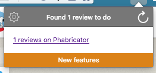
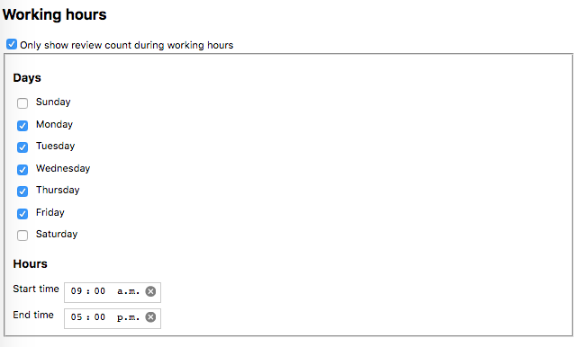

MyQOnly Release Notes
0.12.5
Bug fixes
-
The system dark / light mode is now respected.
Changes
-
Switched to using Lit and CSS module scripts for the MyQOnly UI.
-
MyQOnly now requires Firefox 150 or later, in order to use CSS module scripts.
Known issues
0.12.4
Bug fixes
-
Took another crack at fixing the issue where the badge would not get updated after re-entering working hours after the background script had been shut down / after browser startup.
Known issues
0.12.3
Bug fixes
-
Fixed an issue where the badge would not get updated after re-entering working hours after the background script had been shut down.
Known issues
0.12.2
Bug fixes
-
Fixed an issue where the review counts would sometimes be empty in the panel after the background script is unloaded.
Known issues
0.12.1
Bug fixes
-
Fixed an issue where the Phabricator not-signed-in warning would display, regardless of the sign-in state due to a CSS rule priority issue.
-
Fixed an issue where the GitHub ignored repos format warning message would keep displaying unnecessarily.
Known issues
0.12.0
New features
-
You can now ignore specific GitHub teams using the "Ignored teams" field.
This filters out pull requests where only a team you're on has been
requested for review. Thanks to Daniel Thorn (:relud) for this fix!
-
If you have GitHub repositories in the old format (e.g., "mozilla"
instead of "mozilla/gecko-dev"), MyQOnly will now show a warning in
the popup panel and offer a migration helper tool to convert them to
the new format automatically.
-
The options page now validates GitHub repository format in real-time,
showing an error if you enter repositories that aren't in the
owner/repo format.
Changes
-
BREAKING: GitHub ignored repositories now require
exact
owner/repo format (e.g.,
mozilla/gecko-dev) instead of substring matching. This
ensures the count in the badge matches what you see on GitHub. If
you have old-format repositories configured, you'll see a migration
warning with a helper tool to update them automatically.
-
MyQOnly now uses Manifest V3 and requires Firefox 109 or later. This
modernizes the extension architecture for better performance and
future compatibility.
Bug fixes
-
Fixed an issue where the GitHub review count could be incorrect when
using ignored repositories. The count now properly reflects what the
GitHub API returns after filtering. Thanks to Andrew Halberstadt (:ahal) for the patch!
Known issues
0.11.0
New features
-
There is now an option to ignore specific users from GitHub. Thanks to
Olivier Mehani for the patch!
Known issues
0.10.0
New features
-
There is now an option to ignore draft pull requests from GitHub.
Thanks to
Andrew Halberstadt for the
patch!
Known issues
0.9.1
Bug fixes
-
Fixed an issue where setting an empty string as the list of ignored
GitHub team repositories would cause all GitHub repositories to be
hidden. Thanks to
Andrew Halberstadt for the
patch!
Known issues
0.9.0
New features
-
It's now possible to ignore a GitHub team repository by using just a
substring of the URL. This means
mozilla-mobile/fenix would skip reviews for that repo,
and mozilla-mobile would skip reviews for that entire
org. Thanks to
Andrew Halberstadt for the
patch!
-
GitHub API tokens can now be set in the Options page for private
repositories! Thanks to
Justin Wood for the patch!
Changes
Bug fixes
Known issues
0.8.2
Bug fixes
- Updated icons to meet new requirements on addons.mozilla.org.
Known issues
0.8
New features
-
It's now possible to filter out group reviews from your review count.
Look for the "Include reviewer groups in badge count" checkbox in the
Options interface. Thanks to
Aaron Klotz for the patch!
Known issues
0.7.1
Bug fixes
-
Fixed the "activeRevisions is null" bug in the Phabricator test case
debug tool.
Known issues
0.7
New features
-
GitHub pull requests from yourself or specific teams can be filtered
out. Thanks to thomcc for the
patch!
Bug fixes
-
Worked around
a grammar issue
for singular reviews / needinfos in the panel.
-
If GitHub usernames or Bugzilla API keys are cleared after originally
being set, doesn't attempt to query those services
- Improved some spacing in the Options interface
Known issues
0.6.1
Bug fixes
- Fixed a bug where some services would get the same IDs.
Known issues
0.6
New features
Bug fixes
Known issues
0.5.4
Bug fixes
- Skipped 0.5.3 due to an AMO upload snafu.
-
Migrating the storage schema to increase flexibility for upcoming
features.
Known issues
0.5.2
Bug fixes
-
Fixed the Bugzilla API key input so that it properly updates the
configuration now.
Known issues
0.5.1
Bug fixes
-
Fixed
the refresh button so that it actually refreshes the count by asking
services for updated counts. How embarrassing!
-
Added a minimum delay of 250ms to the refresh state in the popup.
Thanks to jhirsch for the patch!
Known issues
0.5
New features
-
Redesigned the panel. The panel now has a button to refresh the review
count, as well as a shortcut to the add-on options page.

-
Added working hours support. Choose which windows of time you want to
be informed about your review queue. Thanks to jhirsch for the initial
implementation!

Bug fixes
- Made the Bugzilla API key input a password field
-
Added a simple, and hopefully unobtrusive new feature notification
system. To be used sparingly.
-
Added a very simple debugging tool for generating Phabricator test
cases (hover your mouse over the bottom-right part of the options
page).
Known issues